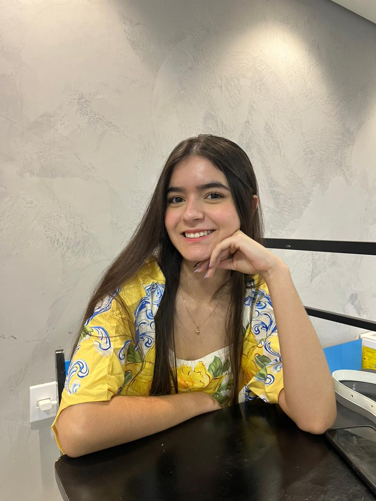
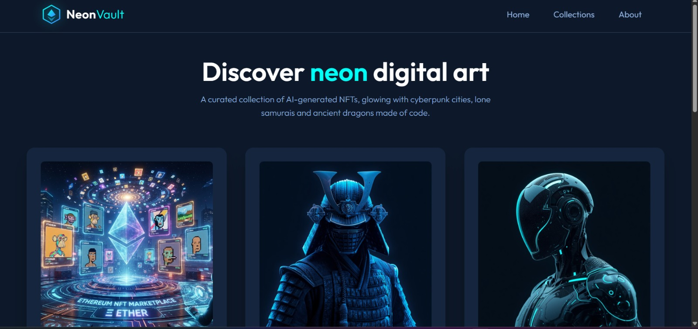
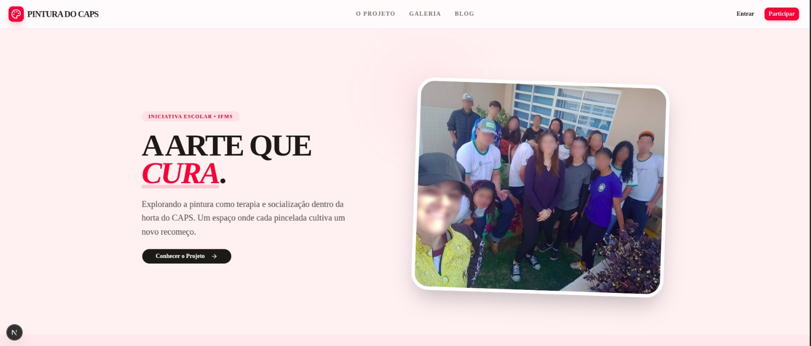
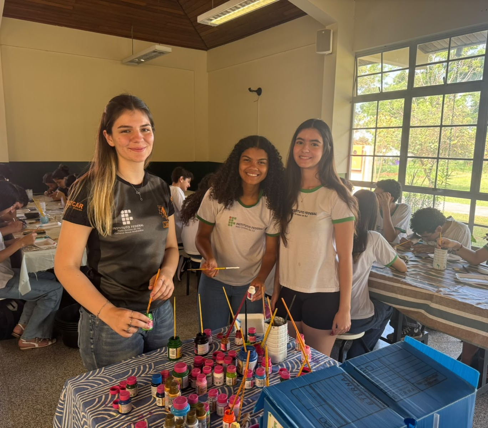
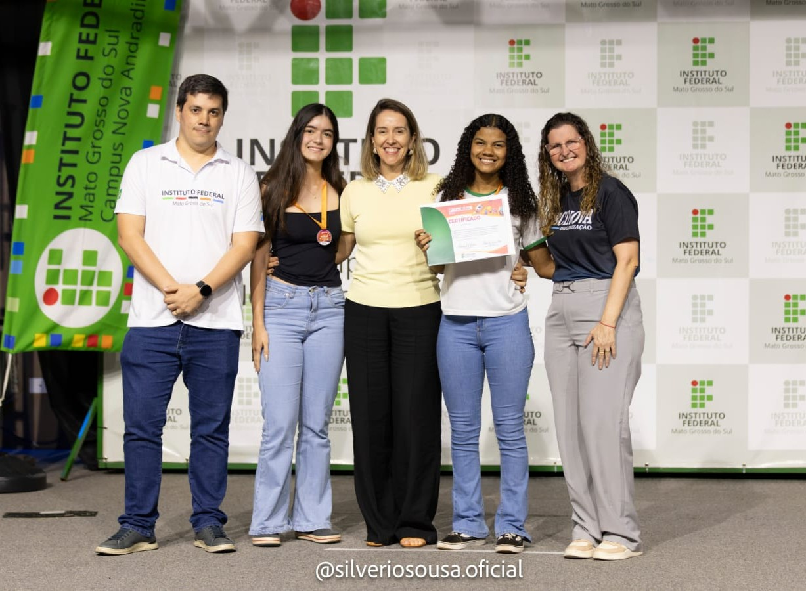

Trabalhos acadêmicos
Pintura-mural da horta do centro de atenção psicossocial -CAPS do município de Nova Andradina utilizando a arte como meio de ensino, socialização e terapia.

Sou uma pessoa dedicada aos estudos e gosto muito de aprender coisas novas. Tenho grande interesse por música, artes e filmes, atividades que contribuem para minha criatividade e ampliam minha visão de mundo. Além disso, sou apaixonado pelos conteúdos de História e Geografia, pois gosto de compreender melhor os acontecimentos do passado, as diferentes culturas e a organização dos espaços geográficos. Sempre procuro participar ativamente das atividades escolares, demonstrando interesse e vontade de adquirir novos conhecimentos. Acredito que a educação é fundamental para meu crescimento pessoal e acadêmico, por isso busco aproveitar ao máximo todas as oportunidades de aprendizagem.
Pintura-mural da horta do centro de atenção psicossocial -CAPS do município de Nova Andradina utilizando a arte como meio de ensino, socialização e terapia.
Já realizei cursos através do Senar, Senai e plataformas que a escola disponibiliza.
Excel intermediário (30h)
Excel básico (16h)
Família, qualidade de vida e controle de orçamento familiar (20h)
Passos para o primeiro emprego (10h)
Projetos voluntarios, participar de aulas extras e grupo de estudos.

Coleção responsiva de NFTs gerados por IA, com visual neon, cards animados e interface construída em React.

O site apresenta o desenvolvimento do projeto, com postagens e imagens que mostram sua evolução ao longo do tempo. Além disso, destaca a importância da arte como forma de expressão, criatividade e melhora psicologica

Na semana de tecnologia e artes, desevolvemos uma oficina de pintura em mandala.

Nosso projeto foi premiado como melhor diario de bordo.
Participação em oficina na creche, pintura com as crianças
Oficina de pintura de mandala
Apresentação do meu projeto
Premiação da FECINOVA
Quer conversar sobre um projeto ou oportunidade? Me escreva neste e-mail: